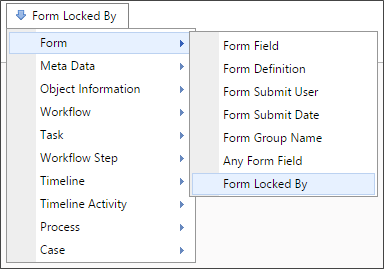

Returns
This system variable returns a Boolean value reflecting whether or not the Form is being converted to a PDF. Use this system variable to change is displayed on PDF versions of a Form.
This system variable returns a Boolean value reflecting whether or not the Form is being converted to a PDF. Use this system variable to change is displayed on PDF versions of a Form.
This system variable returns the name of the currently selected tab in a specified TabStrip control.
tab: This required string modifier contains the name of the TabStrip control you wish to evaluate to determine the currently selected tab.
format=name: This optional modifier will return the Name of the current tab, instead of the Tab ID.
{CURRENT_TAB, tab=TabStripName}
 You can also return the current tab using the form field system variable for the TabStrip control as well, e.g.,
You can also return the current tab using the form field system variable for the TabStrip control as well, e.g., {:TabStripName}. For most use cases, this is probably the simplest method of returning the current tab's name.
This system variable returns the name of a group that an attached object is in.
This system variable returns a comma-separated list of object names attached to this form instance.
Groupname: Filters the results returned by group.
ShowName: The option is set to 1 by default. When set to 1, it will display the name of the attachment.
ShowDesc : The option is set to 0 by default. If set to 1, it will display the attachment’s description.
ShowID : The option is set to 0 by default. If set t 1, it will display the object’s internal ID.
If each is set to 1, each attachment will be returned in the format “name : description, name : description, name : description”.
The GroupName parameter limits the system variable such that it only returns a list of objects in the specified group.

This system variable returns the cumulative size of all documents attached to the form.
groupname: The option can be used to have the system variable return the cumulative size of only the documents in the specified group.
This system variable returns a string containing the name of the Form Definition.
This system variable returns a string containing the Group name that has been configured in the Form Definition.

This system variable returns a string containing the name of the most recent form event.

This system variable returns a string reflecting the type of the most recent form event. The returned string can be any of the following values:

A Form Field system variable will return the value of a specified form field. The data will be drawn from the active instance of the Form. When the form field name is the name of a column in an array, this system variable will return a comma separated listed of the values of all the non-empty fields in that column. To include empty values in that list, set the optional parameter KeepEmptyRows to true.
{FORM:form_field_name}
OR
{:form_field_name}
form_field_name (Required): The name of the form field whose value you wish to return.
The Modifiers available depend on what kind of data the form field contains. If the form field contains arbitrary data, then the form field system variable Modifiers apply. If the form field contains data about a user, then the user system variable Modifiers apply. No Modifiers are available when the form field contains information about an object.
The general form field system variable parameters apply to all form fields.
When the form field name is the name of a column in an array, this system variable will return a comma separated listed of the values of all the non-empty fields in that column. To include empty values in that list, set the optional parameter KeepEmptyRows to true.
When the form field is a checkbox, you can use the formatters True="ValueIfTrue" and False="ValueIfFalse". These formatters allow you to place any desired string in the 'value' to replace the default values of True and False with the desired strings.
When the form field has a numeric values, adding the formatter digits=n, where "n" is the number of digits, will return the number formatted as an n-digit number.
When the form field is a Comment Log control, adding the formatter format=comments will return the number of comments entered into the comment log.
This system variable returns the ID of the current form instance.
This system variable returns the version number of the current form instance.

This system variable returns the date and time the form was locked.
This system variable is a DateTime system variable and can use any of the common DateTime modifiers.

This system variable returns the user who locked a form.
This system variable is a User system variable and can use any of the common User modifiers.

This system variable returns a Boolean value reflecting whether or not the Form is being printed. Use this to change what is displayed on printed versions of the Form.
This system variable returns a string value consisting of the folder path for Form attachments. If there are more than one attachment, then a comma-separated list of folder paths will be returned.
Groupname: Returns only the paths for attachments in the specified group.

This system variable returns information about the user that submitted the Form, thus creating the Form instance.
This system variable is a User system variable and can use any of the common User modifiers.
When an object is created programmatically, e.g., via a Goal or Stream Action, there will be no value for this variable, unless the object's creation can be traced to a specific user interaction.
This system variable displays a specified icon on a Form page.
IconNumber (Required): The ID Number of the Icon, which is displayed as the icon's tooltip in the Icon Chooser.
IconSize: The number, in pixels, of the vertical size of the icon to be displayed.
IconColor: The HTML Hexadecimal color of the icon.
IconBackColor: The HTML Hexadecimal color of the icon's background.
CSSClass: A custom CSS Class to apply to the icon.
Tooltip: The tooltip text to display when the user hovers over the icon.

This system variable returns a Boolean result that is true if another user has locked the form, preventing any other user from making changes to it. Form locking can be enabled with the “Enable Form Locking” setting on the form definition. The behavior of this system variable is different when it is used on a form or in a condition on a form. When this variable is used in a condition when a user is running a form, it will return FALSE even though the current user has it locked. When used on a form it will return TRUE only when ANOTHER user has the form instance locked. The Knowledge View behavior is different, in that it simply returns TRUE if anyone has it locked.

This system variable returns a Boolean value reflecting whether or not the Form is being displayed on a mobile device. Use this to change what a Form displays depending on what device is displaying a Form. Tablets count as mobile devices.

This system variable returns a Boolean value (e.g. yes/no, true/false) reflecting whether or not the Form instance has just been created.

This system variable returns the number of attachments to a Form instance.
ObjectType: This system variable’s results can be restricted by object type using the ObjectType parameter. Acceptable values are DOCUMENT and FORM.
CSStatus: The option is available with Concept Share integration. When a value is specified, the system variable will return only the number of documents matching that stated. If “Failed” is selected, this system variable will return the number of documents that failed to upload to Concept Share.
GroupName: The option limits the system variable such that it only returns the number of attachments in the specified group.
UploadStatus: This parameter will return the number of attachments that meet the specified value.

The Submit Date system variable returns the date a form instance was submitted on.
This system variable is a DateTime system variable and can use any of the common DateTime modifiers.